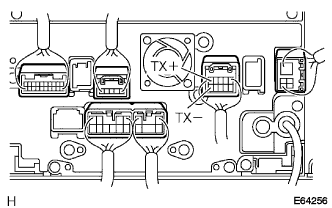

"Wide Multi AV Statusillon" System AVC-LAN abnormality |
reference)reference)reference)
| Step 1 | Remedic options for retailer (equipment using AVC-LAN) |
Remove the options for retailing options
Check if the connector of the store installation option (device using AVC-LAN) is separated and the abnormality is reproduced when there is no option for the retailer.
| A | B |
|---|---|
| Abnormal reproduction or Optional device with a store has not been installed | Normal return |
|
| ||||
| A | |
| Step 2 | Navigation receiver ASSY single inspection (resistance value) |
 |
Resistance inspection
Cut all the connectors of the navigation receiver ASSY.
Use SST (Toyota Electrical Tester) to inspect the resistance between TX+terminals and TX-terminals.
| Tester connection | Reference value |
|---|---|
| TX+(C10) ← → TX- (C9) | 60-80Ω |
|
| ||||
| OK | |
| Step 3 | Navigation computer inspection |
Navigation computer removal inspection
Cut all the connectors of the navigation computer, separate the navigation computer from the AVC-LAN, and check if the abnormality is reproduced.
Optional equipment confirmation
Check whether the back guide monitor is installed and proceed to the following flying destination.
| Inspection result | Optional equipment | Destination |
|---|---|---|
| NG | Back guide monitor system non -mixed car | A |
| NG | Back guide monitor system -equipped car | B |
| OK | Back guide monitor system non -mixed car | C |
| OK | Back guide monitor system -equipped car | C |
|
| ||||
|
| ||||
| A | |
| Step 4 | Wire harness or connector inspection (navigation receiver ASSY ← → navigation computer) |
 |
Navigation receiver ASSY removal inspection
The connector in the diagram of the navigation receiver Assembly is separated, and the wire harness between the navigation computer and the navigation receiver ASSY ← → the navigation computer is separated from the AVC-LAN to check if the abnormality is reproduced.
|
| ||||
| NG | |
| Step 5 | Navigation receiver ASSY inspection (AVC-LAN voltage) |
|  |
Voltage inspection
Use a SST (Toyota Electrical Tester) to check the voltage between each terminal from the back of the connector while connected to the vehicle side wire harness connector.(The terminal array isreference)
| Tester connection | Measurement conditions | Reference value |
|---|---|---|
| TX+(H5) ← → TX- (H10) | IG Switch ACC | Approximately 0V |
| TX+(H5) ← → Body Earth | IG Switch ACC | Approximately 2.5V |
| TX- (H10) ← → Body Earth | IG Switch ACC | Approximately 2.5V |
|
| ||||
| OK | ||
| ||
| Step 6 | Wire harness or connector inspection (navigation computer ← → television camera controller) |
reference)Preparation before inspection
Cut the connector in the diagram of the navigation computer.
 |
Cut the connector in the figure of the television camera controller.
Conduction inspection
Use SST (Toyota Electrical Tester) to check the navigation computer ← → television camera controller between the wire harness.(See the terminal sequence)
| Tester connection (Navigation computer side ← → television camera controller side) | standard |
|---|---|
| TX+(B5) ← → TX1+(B36) | There is an conductor |
| TX- (B10) ← → TX1- (B35) | There is an conductor |
Short -circuit inspection
Use SST (Toyota Electrical Tester) to inspect the conjunction between the wire harness connectors on the navigation computer side and between the body earth.(See the terminal sequence)
| Tester connection | standard |
|---|---|
| TX+(B5) ← → Body Earth | Without conduction |
| TX- (B10) ← → Body Earth | Without conduction |
|
| ||||
| OK | |
| Step 7 | Television camera controller inspection (removed) |
Television camera controller removal inspection
Cut all the connectors of the television camera controller, disconnect the wire harness between television camera controllers, navigation computers and television camera controllers and navigation computers from AVC-LAN to check if abnormalities are reproduced.
|
| ||||
| NG | |
| Step 8 | Wire harness or connector inspection (navigation receiver ASSY ← → television camera controller) |
|
Navigation receiver ASSY removal inspection
Cut the connector in the diagram of the navigation receiver ASSY, disconnect the wire harness between the television camera controller and the navigation receiver ASSY ← → television camera controller from AVC-LAN to check if the abnormality is reproduced.
|
| ||||
| OK | ||
| ||